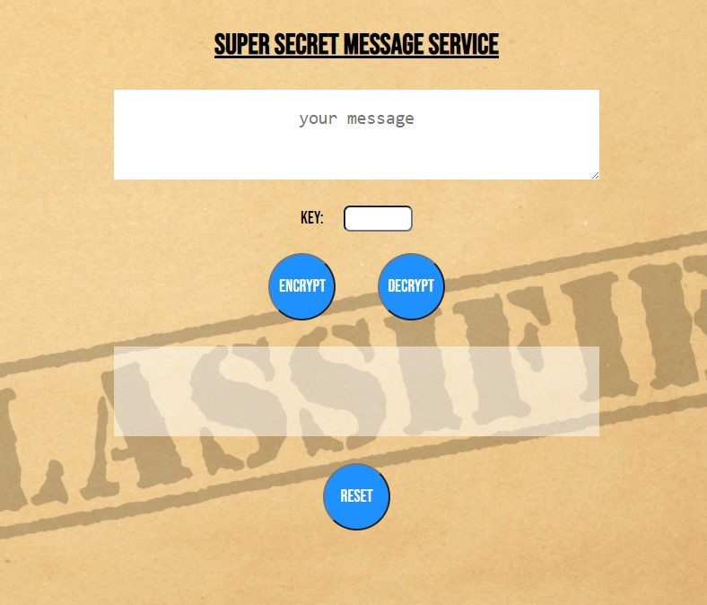
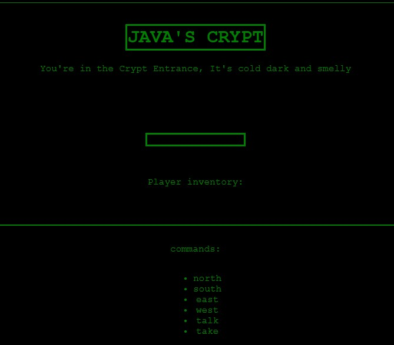
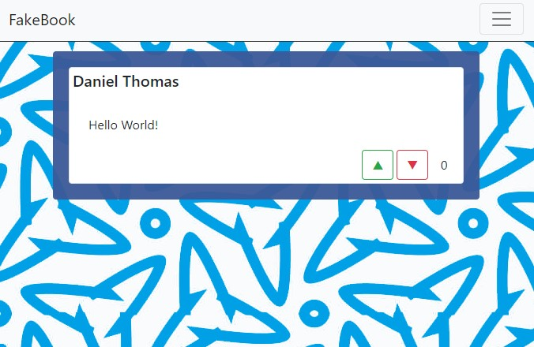
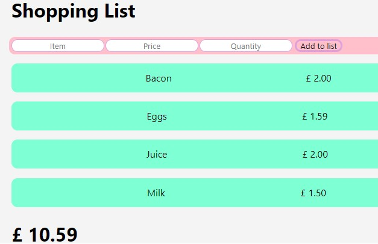
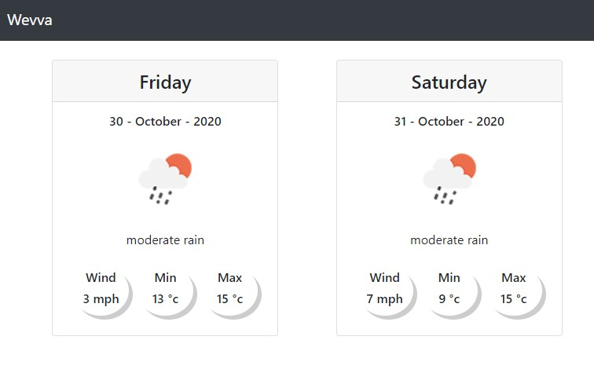

Hello, My name is Daniel Thomas and I’m a Developer from Sheffield. I started learning to code in June 2020 and
although
I am very new to programming, I have found a passion for creating simple, user-friendly sites and applications.
Programming is a creative field and I enjoy bringing things to life, I've tried to express this in my projects where possible.
To date most of my work has been created using HTML, CSS and JavaScript and React. I have used Redux, Express and
Mongo DB in some areas and my knowledge of these technologies is growing... (more projects are in the pipeline). Like most who are new
to the world of programming I’m constantly learning, making and breaking things.
My goal is to continue my journey as developer, grow my portfolio and (hopefully) start a career in this field. If you have time please take a look at my
work and if you’d like to get in touch, drop me an email or connect with me on Twitter / LinkedIn.
Thanks for reading
- Dan.
Caesar Cipher

A simple encoder / decoder project built using HTML, CSS and Javascript. Users can add text and select a key to
encrypt a message.
Users receiving an encoded message and a key can enter these through the same interface and click decrypt to
find out what the message says. wkdqnv iru orrnlqj dw pb sruwirolr (3).
This was a fun little project which introduced me to some new concepts and methods in JavaScript. I added a
background to compliment the application and used flexbox to make sure the app is responsive to display sizes.
Java's Crypt

Harking back to text based adventure games on the old BBC micro (if you remember those). Built using HTML, CSS
and Javascript. This project uses Object Oriented Programming to creating simple maze game for users to navigate
around, interacting with the characters as they go. The displays are updated using JS and the Document Object
Model, so the application runs on a single page.
The interface is simple and clean. I have tried to replicate the monochromatic displays of the 80’s to create a
user feel that is authentic to the games on which this is based.
Calculator
A basic calculator made using React and styled using flexbox / CSS.
This is a fully functioning calculator with some character added to give some unique styling to the experience.
This is a very early React Project and one which introduced me to the framework. It’s a single component
application that proved to be challenging in places (I never thought decimal points could cause such headaches).
FakeBook

A social media site/app created using React and styled using React Bootstrap.
A simple user interface implemented using React Router gives the user the ability to create new posts and view
past posts. The functionality to increase or decrease likes exists on each post giving a familiar social media
feel. The app uses local storage to keep posts beyond refreshing the page.
This was my first venture into a React application using multiple components and local storage. Whilst
challenging this project showed me the power and flexibility React can provide.
Shopping List

I created this application to further my React experience. After a few apps I wanted to attempt something that
wasn’t on the bootcamp curriculum.
I created shoppolisto to experiment with more fields and methods inside a React application, adding more
criteria for items and using the data provided to create totals for both individual lines and the whole list
were my goals here.
Creating this app was a light, fun experience and though it probably needs a bit more polish now, it’s one I’m
very fond of.
Weather App

Using the Open Weather API this application collects a 5 day forecast and presents a daily summary in an
accessible format to the user.
Built using React and styled using React Bootstrap. The app consumes the API using Axios. It has some custom
loading messages which are provided to add some character to the application.